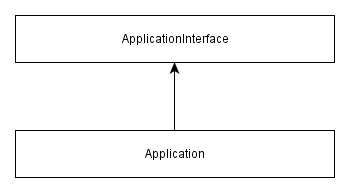

3.3. PHP Interfaces
In PHP, interfaces allow you to define which behavior a class should have, but without providing the implementation of such a behavior. This is also called a contract: by implementing an interface, a class agrees to the contract terms.
In Zend Framework 3, interfaces are widely used. For example, the Application class implements the
ApplicationInterface, which defines the methods every application class must provide:
<?php
namespace Zend\Mvc;
interface ApplicationInterface
{
// Retrieves the service manager.
public function getServiceManager();
// Retrieves the HTTP request object.
public function getRequest();
// Retrieves the HTTP response object.
public function getResponse();
// Runs the application.
public function run();
}
As you can see from the example above, an interface is defined using the interface
keyword, almost the same way you define a standard PHP class. As a usual class,
the interface defines methods. However, the interface does not provide any implementation
of its methods. In the ApplicationInterface interface definition above, you can
see that every application implementing this interface will have method getServiceManager() for
retrieving the service manager (about the service manager, see later in this chapter), the
getRequest() and getResponse() methods for retrieving the HTTP request and response, respectively,
and method run() for running the application.
In Zend Framework 3, by convention, interface classes should be named with
Interfacesuffix, likeApplicationInterface.
A class implementing an interface is called a concrete class. The concrete Application class
implements the ApplicationInterface, which means it provides the implementation of the methods
defined by the interface:
<?php
namespace Zend\Mvc;
class Application implements ApplicationInterface
{
// Implement the interface's methods here
public function getServiceManager()
{
// Provide some implementation...
}
public function getRequest()
{
// Provide some implementation...
}
public function getResponse()
{
// Provide some implementation...
}
public function run()
{
// Provide some implementation...
}
}
The concrete Application class uses the implements keyword to show that it
provides an implementation of all methods of ApplicationInterface interface.
The Application class can also have additional methods, which are not part
of the interface.
Graphically, the class relations are displayed using inheritance diagrams.
In figure 3.1, the diagram for Application class is presented. The arrow
points from the child class to the parent class.
 Figure 3.1. Application class diagram